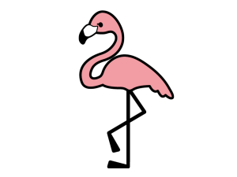

「やあ！ みんな、こんにちは！ ぼくはベニイロフラミンゴ。フラミンゴの仲間の中で、いちばん体が大きくて、いちばん鮮やかな『紅色』をしているんだ。
ねえねえ、ぼくたちの羽を見て。とってもきれいな赤色でしょう？ でもね、生まれたばかりの赤ちゃんは、実はまぶしい赤じゃなくて、地味な『灰色』をしているんだよ。じゃあ、なんでこんなに赤くなると思う？
ヒントはね……毎日食べている『ごはん』なんだ！ ぼくたちは、エビの仲間や藻が大好物。それをたくさん食べるうちに、食べ物に入っている赤色のパワーが体にたまっていって、だんだん夕日のようなきれいな赤色に変身していくんだよ。
それから、ぼくたちがプールの中で『１本足』で立っているのを見つけたら、注目してみてね。水の中にずっといると足が冷えちゃうから、片方の足を羽の中に入れて、あっためているんだ。それに、ぼくたちにとっては、１本足で立つ方がつかれなくてラクちんなんだよ。
お父さんとお母さんがお口から赤い『フラミンゴミルク』を出して、一生懸命子育てをする優しい姿も、ぜひ観察してみてね！」